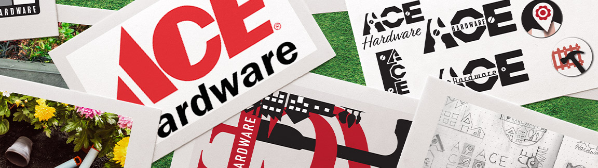
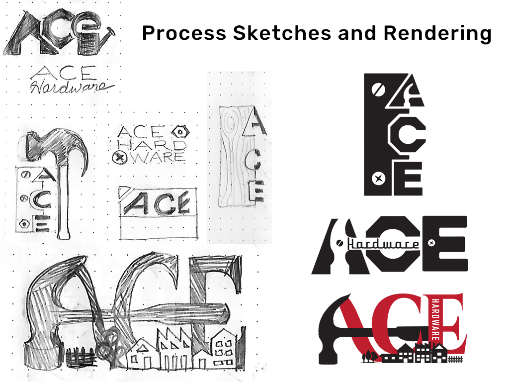
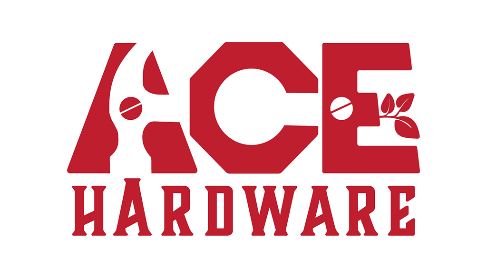
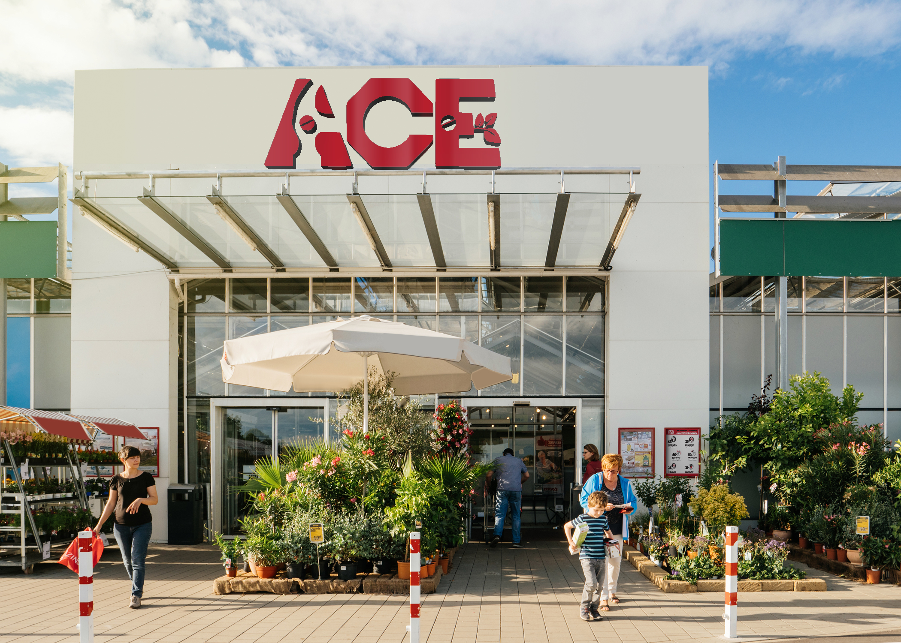
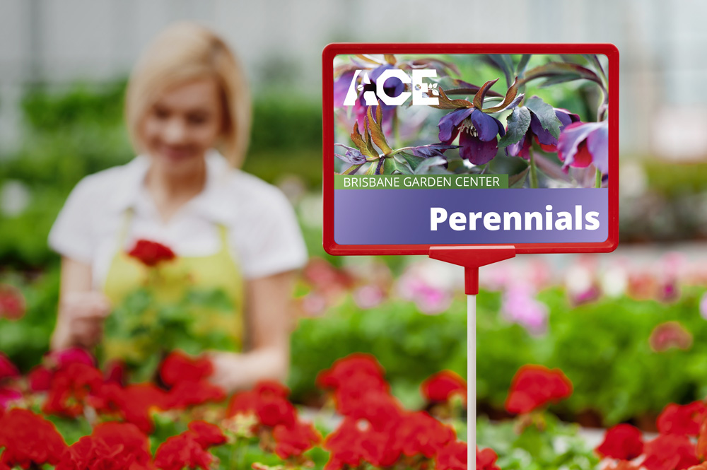
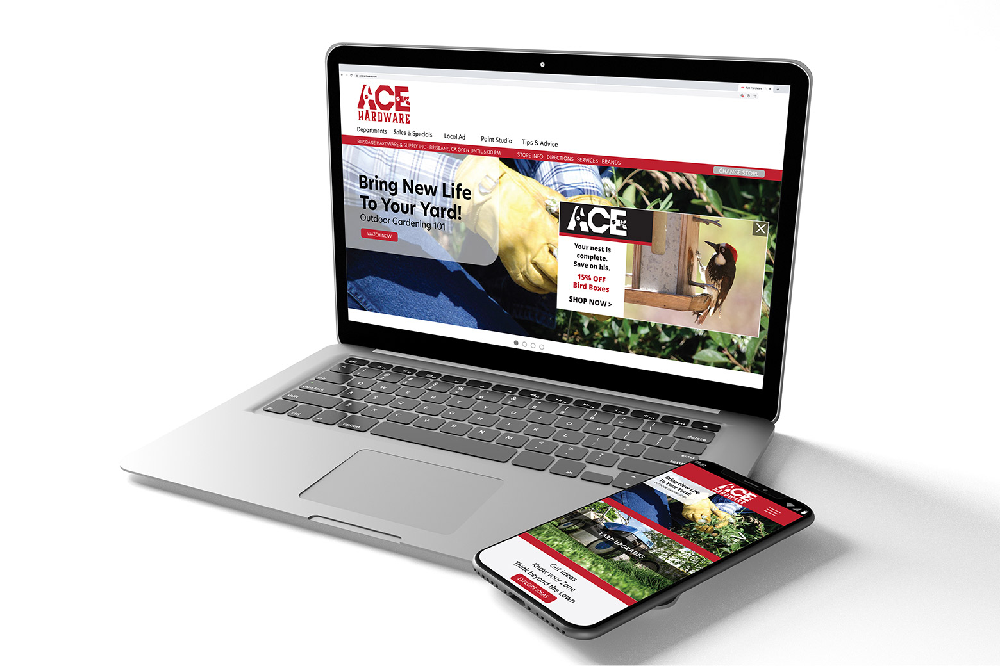
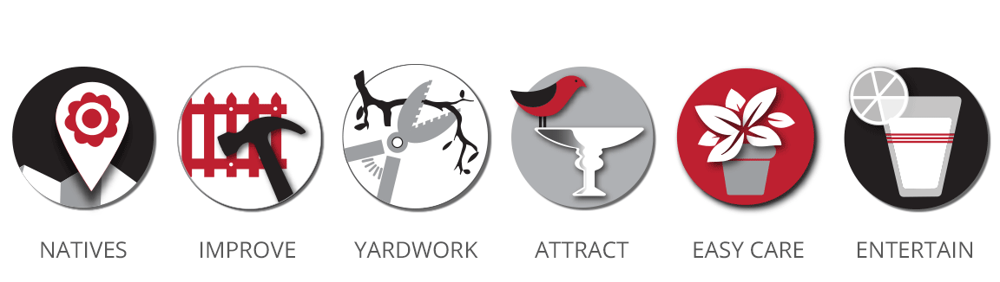
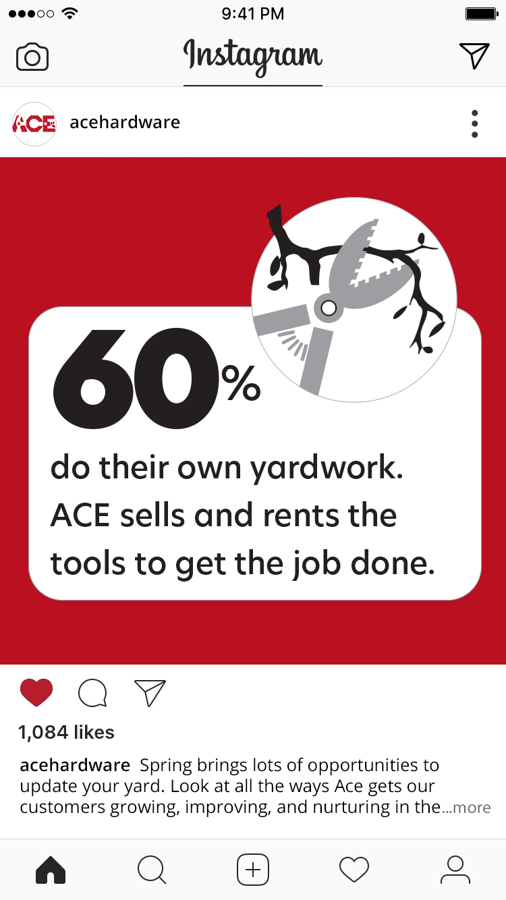
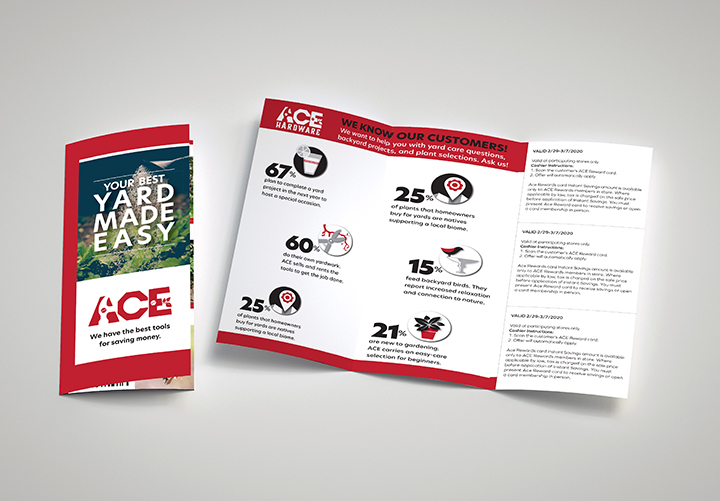

Ace Hardware Logo RedesignIllustrator, InDesign, Photoshop

Ace Hardware is an award-winning brand. The stores are noteable for excellent customer service and local convenience. By changing symbolism in the iconic logo to include gardening and by selecting recognizable tool shapes, I am able to express the brand's friendly qualities and better showcase all departments.
After researching, I learned that 30% of sales come from the nursery department and yard-related products. It was important to me to include symbolism related to gardening to attract this customer base. New icons were developed for an infographic and mailable brochure to address the many ways in which Ace Hardware attends to gardeners' varied yard goals.
Sketches and Early Renderings
Logo Redesign
A hammer silhouette is prominent across the logo; common fasteners have been added, and a branch extends from the E to represent the nursery department. The hammer strikes the head of the letter A, to represent "hitting the nail on the head" in regards to their A-quality customer service.
Exterior Signage
Website with Pop-Up Ad and Mobile Screen
Nursery Department Icons
I researched statistics about how US homeowners use their yards to create informational icons that can support the relationship between Ace employees and customers. This project presented the challenge of adhering to a limited palette of red, white, and black to keep with established branding. The icons are used in the coupon brochure and Instagram animated post.
Social Media
Promotional Brochure with Coupons
